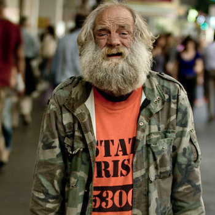

As we looked back into the history of streetwear we traced the beginning back to Shawn Stussy, the local surfboard shaper of Laguna Beach. His logo began of the surfboards that he shaped until 1980 when he translated it to T-shirts. These became instantly popular with all the local skaters and grew to worldwide fame from there. Perhaps the most amazing thing that came of Stussy is what makes streetwear what it is today, which is even as the popularity grows is seems to remain as something underground.Many have attributed this to how streetwear has became a subculture, one that emphasizes that the independents rule. The most popular streetwear sites, stores, and brands have steered away from being bought out by million dollar corporations making it mainstream. Even numerous botiques are phasing out the large corporate brands, while keping their support to the independent brands.
Shawn Stussy started the movement of the surfer from California expressing himself through his clothes, which led to the hip-hop culture getting involved. In that time period the African Americans had no voice in the media nor were they being marketed to. Fashion was used as a from of art, expression, and communication. Without mainstream media, this underground movement marketed itself through the droves of individuals with their street clothes. Hip-Hop encouraged all to self expression and that is what streetwear has become, the clothing maker expresses something they feel but when you put it on it becomes you. Something that you have to say.
All though the surf, skate, and hip-hop community all had their roots in streetwear. Japan emerged on the scene in the 1980's as well. The Japanese youth wanted everthing American, however, by the early 1990's they were helping pioneer the way to what Streetwear has become. Brands like BAPE and Real Mad Hectic became trendsetters by coming out with limited edition apparel, with background stories, and very high pricepoints. These factors led to obsessive followings, where many claim Asia/Japan get all the great sneakers and apparel.
These three movements have continued to progress into what streetwear is today but streetwear finds its roots in these movements. Movements that have been led by a non-mainstream subculture of self expression and individuality. Huge numbers of people find brands that are not even marketed heavily, creating the streetwear phenomenon that we live in today.
The actual term streetwear clothing refers to designs coming from the street up into fashion instead of from fashion houses and down into the street. Streetwear clothing is considered to be a more underground fashion because it developed as a response against the pop-culture mainstream brands like GAP and Abercrombie and Fitch. In the early eighties a group of individual entrepreneurs in their twenties, primarily on the west coast of America, began developing fashion that reflected their lifestyles such as skateboarding, surfing, and hip-hop. They took their inspiration from the street bands that often sold their own designed t-shirts and mix tapes to the fans directly.
Streetwear history continued into the early 90s when Stussy and others from the skate/surf world began experimenting with melding hip-hop sensibilities with the surf and skate styled clothes. They took elements of music, art, and street theatre and delivered them in the clothing designs. Stussy and others encouraged his fans to combine preppy with skatewear and hip-hop or rock clothes with fashion to give a personalized look. The emergence of brands began around this time and the look began to spread across the US.
In the late 90s the current lords of streetwear began to look west to Japan for inspiration. Japanese companies were taking streetwear clothing to the next level, adding pop culture influences such as toys, games, anime etc to tie in with the streetwear clothing sensibilities. Stussy made bonds with various Japanese designers and soon the rest of streetwear was following with him to learn from the Japanese.